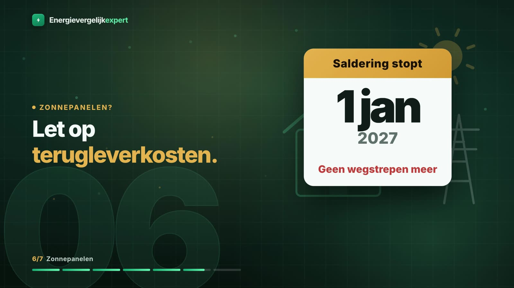
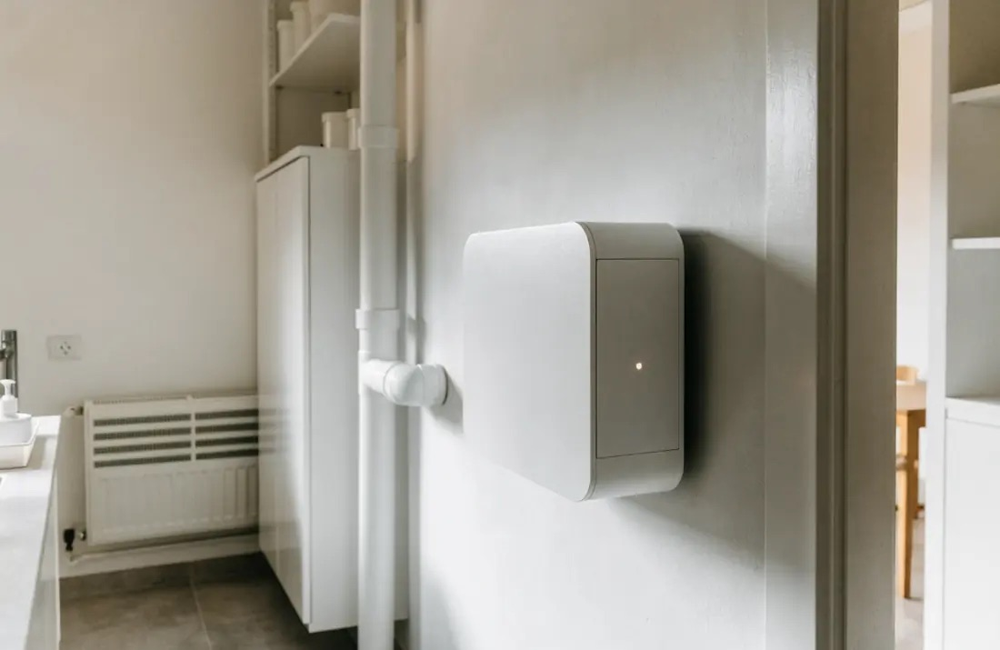

Hoe salderen nu werkt
De Rijksoverheid geeft een eenvoudig voorbeeld. Een huishouden levert in de zomer 2.500 kWh stroom terug aan het net. Daardoor mag het in de winter 2.500 kWh gebruiken zonder daarvoor stroomkosten, netwerkkosten en energiebelasting te betalen. Het terugleveren wordt weggestreept tegen het verbruik: dat heet salderen. Alles wat je boven die 2.500 kWh gebruikt, betaal je gewoon.
Volgens de ACM verrekent je leverancier daarbij ook de energiebelasting en de btw. Je kunt niet meer salderen dan de hoeveelheid stroom die je leverancier je levert; lever je meer terug, dan krijg je over het overschot een terugleververgoeding die je leverancier zelf bepaalt. Je panelen moeten wel zijn aangemeld via energieleveren.nl, iets wat je installateur ook voor je kan doen.
Wat er vanaf 1 januari 2027 verandert
Eerder was het plan om salderen vanaf 2025 stap voor stap af te bouwen. Het kabinet heeft besloten de regeling in plaats daarvan in één keer te stoppen, op 1 januari 2027. Volgens de Rijksoverheid en de ACM geldt daarna:
- Je leverancier verrekent de stroom die je afneemt niet meer met de stroom die je teruglevert.
- Over alle stroom die je van je leverancier afneemt betaal je energiebelasting en btw.
- Over stroom die je zelf opwekt en direct gebruikt betaal je geen belasting en geen kosten aan je leverancier.
- Voor teruggeleverde stroom krijg je een redelijke vergoeding. Tot 1 januari 2030 is die minstens 50% van de prijs die je betaalt voor stroom zonder energiebelasting en btw.
- Leveranciers mogen terugleverkosten rekenen, maar alleen de kosten die ze maken om teruggeleverde stroom te verwerken. De ACM houdt daar toezicht op.
De ACM waarschuwt voor één ding in het bijzonder: terugleverkosten kunnen soms hoger uitvallen dan de vergoeding die je voor je teruggeleverde stroom krijgt.

Terugleverkosten en terugleververgoeding horen bij elkaar
Je leverancier bepaalt zelf de hoogte van de terugleververgoeding, maar die moet redelijk zijn en in je contract staan. Hoe vaak hij mag veranderen, hangt af van je contract:
- Vast tarief: je leverancier mag de terugleververgoeding tijdens het contract niet wijzigen.
- Variabel tarief: de vergoeding kan veranderen, vaak op vaste momenten zoals elke drie maanden, met minimaal een maand bericht vooraf.
- Dynamisch tarief: de vergoeding volgt de actuele stroomprijs en kan per kwartier of per uur verschillen.
Terugleverkosten verschillen ook per leverancier. Soms is het een vast bedrag, soms een bedrag per teruggeleverde kWh. De ACM rekent een voorbeeld voor: een huishouden houdt na het salderen 1.000 kWh over die het heeft teruggeleverd. Met een vergoeding van €0,15 per kWh is dat €150; de leverancier rekent €70 terugleverkosten, dus houdt het huishouden €80 over. Dat zijn voorbeeldbedragen van de ACM, geen actuele tarieven. Het punt is de rekensom: vergoeding min kosten, en die twee dus altijd samen vergelijken.
De ACM noemt nog een mogelijkheid: het kan gunstig zijn om aparte leveranciers te kiezen voor levering en teruglevering. Op energievergelijkexpert.nl staat een overzicht van terugleverkosten per leverancier en wat het einde van salderen met je terugleververgoeding doet.
Loopt je contract over de jaargrens?
Sluit je nu een contract van een jaar of langer af, dan loopt het door in 2027. Kijk dan goed wat er in je contract over salderen staat. De wettelijke regeling stopt op 1 januari 2027 en je leverancier kan die datum niet uitstellen. Het kan wel zo zijn dat je volgens je contract alsnog recht hebt op salderen. Je leverancier moet je verbruik en teruglevering opsplitsen in de periode tot en met 31 december 2026 en de periode vanaf 1 januari 2027.
Verandert je leverancier de voorwaarden van een contract dat over de jaargrens loopt, dan mag dat alleen als hij in je huidige voorwaarden duidelijk heeft opgenomen waarom. In dat geval kun je ook kosteloos overstappen naar een andere leverancier.
Zelf gebruiken wordt belangrijker
De Rijksoverheid noemt als een van de redenen voor het stoppen dat huishoudens hun eigen stroom meer zelf moeten gebruiken, omdat dat minder druk op het stroomnet geeft. Voor je portemonnee komt het op hetzelfde neer: een kWh die je direct gebruikt, hoef je niet in te kopen en er komt geen belasting op. Een kWh die je teruglevert, levert alleen de vergoeding op, min eventuele kosten.
Daar zijn verschillende manieren voor. De wasmachine en vaatwasser draaien als de zon schijnt, een elektrische auto laden in de middag, of een thuisbatterij die overdag oplaadt en 's avonds levert. Wie zijn verbruik zo kan verschuiven, heeft ook meer aan een dynamisch contract. Wat dat inhoudt en wanneer het past, lees je in deze vergelijking van vast, variabel en dynamisch.

Een thuisbatterij met een bijbehorend energiecontract vraagt wel om aandacht. De ACM waarschuwt dat de batterij het computerprogramma waarschijnlijk niet meer kan gebruiken als je later overstapt naar een andere leverancier. De batterij blijft dan wel je eigen opgewekte stroom opslaan.
En de panelen zelf? Volgens de Rijksoverheid kan de terugverdientijd na 2027 langer zijn, afhankelijk van de prijs van de panelen, de stroomprijs en hoeveel stroom je zelf gebruikt. De Rijksoverheid noemt zonnepanelen ook zonder salderen een goede investering: ze gaan gemiddeld 25 jaar mee en verdienen zich in die tijd ruim terug.
Wat je nu kunt nakijken
- Zoek op je laatste jaarafrekening hoeveel je hebt teruggeleverd en hoeveel er is gesaldeerd.
- Lees in je contract wat er staat over salderen na 1 januari 2027, over terugleverkosten en over de terugleververgoeding.
- Kijk of je contract vast, variabel of dynamisch is: dat bepaalt of je vergoeding mag veranderen.
- Vergelijk contracten op jaarprijs mét je teruglevering, dus inclusief terugleverkosten en vergoeding.
Dat laatste kan op de vergelijker voor huishoudens met zonnepanelen. Een uitgebreide uitleg over de regeling zelf staat bij de salderingsregeling 2027 op energievergelijkexpert.nl. Meer korte stukken over energiecontracten verschijnen op het blog van Energievergelijkexpert.
Bronnen
- Rijksoverheid, Salderingsregeling (stopt 1 januari 2027, voorbeeld 2.500 kWh, minimaal 50% tot 2030, terugleverkosten, 25 jaar), geraadpleegd 23-10-2026
- ACM ConsuWijzer, Salderen en terugleveren (regels, hoogte vergoeding per contractvorm, voorbeeld €150 min €70, contract over de jaargrens, kosteloos overstappen)
- ACM ConsuWijzer, Tips bij een energieleverancier kiezen (aparte leveranciers voor levering en teruglevering, contract met thuisbatterij)
- Belastingdienst, Energiebelasting: geen energiebelasting over zelf opgewekte stroom uit hernieuwbare bronnen
- Energievergelijkexpert, energievergelijkexpert.nl/energie-uitgelegd/saldering/ en /energie-uitgelegd/terugleverkosten/